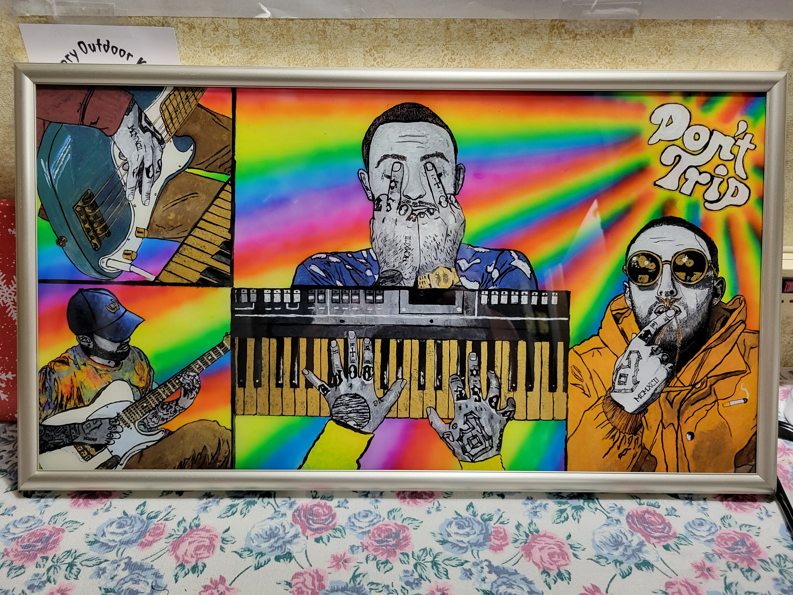

Heaven's artwork Paintings “Don’t Trip Mac Portrait”Paintings01 / 06
“Don’t Trip Mac Portrait”
This portrait of rapper Mac Miller was created on a glass pane in a picture frame. Instead of the traditional way of painting — working from the background up to the foreground and details — I worked backward: from the details and foreground to the background.
Why I made it
I created this painting because I am a fan of Mac Miller's music, and because I was offered a place in a silent art auction at a music concert where my husband's and friends' bands were performing.